| |
|
GÜZERGAH PROJESİ ÇİZİMLERİ
|
Plan Çizimi
Plan Paftaları Boykesit Paftaları Enkesit Paftaları 3B Çizgi Çiz Yol Çizgileri Bitüm Püskürtme Alanları Hız Değiştirme Şeritlerinin Ölçülendirilmesi Genel Bilgiler 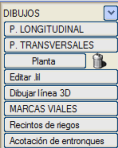Bu başlık altında, güzergah projesini oluşturan farklı verilerin hesaplanmasından elde edilen grafik varlıkların oluşturulmasıyla ilgili çeşitli menüler gruplandırılmıştır; yani, hem plan paftalarının hem de enkesit ve boykesitlerin çizilmesi ile çeşitli çok kullanışlı araçların kullanımı. Plandaki Eksenlerin Etiketlenmesi Aşağıda açıklananlara ek olarak, eksenlerin bir aplikasyonu yapıldıktan sonraki etiketleme olanaklarına da değinmek gerekir ve bunlar burada açıklanmaktadır. Aslında, PLAN menüsünden erişilebilen dikey PLAN ÇİZİMİ menüsü, orada açıklanan eksen etiketleme işlevlerine aynı erişimi sağlar. Ancak, eksen etiketlemesi için alışılmış yöntem, hem PLAN ÇİZİMİ → [ETİKETLEME] hem de APLİKASYON VE ENKESİT → [ETİKETLEME] yolundan erişilebilen ve aşağıda ayrıntıları verilen gelişmiş eksen etiketleme diyalog kutusudur. Gelişmiş Etiketleme Menüsü 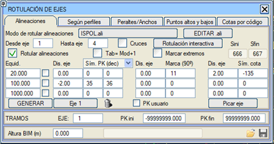Bu menü, birden fazla ekseni aynı tanımla eş zamanlı olarak etiketlemeye yarar. Eğer kesin enkesit verileri varsa, eksen planının yanına, örneğin deverler veya genişlikler gibi belirli verileri de çizmeyi sağlar. Bu diyalog kutusunu kullanarak, herhangi bir güzergah projesinin temelini oluşturan proje eksenlerinin tanımını hesaplamak ve temsil etmek mümkündür. Her bir eksen için ve farklı kesimlere göre etiketleme şekli özelleştirilebilir. Seçenekler şunlardır:
Ardından 3 satırdan oluşan bir veri tablosu görünür. Her satır, belirli bir adım aralığına göre bir KM etiketlemesine karşılık gelir (Kullanıcı KM kutucuğu etkinleştirilirse, KM Denklemlerinden türetilen kilometreler kullanılır). Bu etiketleme, KM'yi temsil etmek, eksen üzerinde bir işaret göstermek ve o KM'deki kırmızı kotu göstermekten oluşur. Hem KM'ler, hem işaretler hem de kotlar, Eksene Mesafe değeriyle verilen bir mesafeye etiketlenir ve bunun için mesafelerin yanındaki sütunlarda beyan edilen tipteki semboller kullanılır. Bölünmüş yollu/hatlı eksenlerde kot etiketlemesi, sıfıra eşit veya daha büyük bir mesafe verilirse sağ kırmızı kotu, negatif bir mesafe verilirse sol kırmızı kotu kullanır. Adım Aralığı (Adım) sütununun her bir kutucuğunun bir aktivasyon kutucuğu vardır; bu kutucuklar etkinleştirilirse, etiketleme yalnızca düz güzergah elemanlarında (PST) yapılır. Varsayılan olarak, her 20 metrede bir S11 tipi bir işaret ('enine kısa çizgi') konulur ve her 100 metrede bir ve eksenden 2 metre uzağa, tamsayı KM'ler için S35 tipi sembolle ve ondalıklı KM'ler için S36 tipi sembolle KM etiketlenir. Kot, negatif tipte bir sembol kullanıldığı için etiketlenmez ve son olarak, üçüncü satırın tüm verileri boş olduğu için her 1000 metrede bir hiçbir şey etiketlenmez. Etiketlemede kullanılan tüm semboller, eksenin azimutuna göre yönlendirilir. Diyalog kutusunun alt kısmında yer alan KESİMLER bölümü, her bir ekseni etiketlemek için bir kilometre aralığı belirlemeyi sağlar. [OLUŞTUR] düğmesi, tanımlanan etiketlemeyi gerçekleştirir. Bu seçenek yalnızca aktif olan gruplara dahil olan eksenler üzerinde işlem yapacaktır. [Eksen n] sadece mevcut eksenin etiketlemesini oluşturur. Diğer yandan, [GERİ AL] düğmesi son oluşturmada yaratılan elemanları siler ve son olarak, [Eksen Seç] düğmesi, belirtilen seçeneklere göre grafik olarak seçilen bir eksenin etiketlemesini yapar. 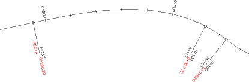
Güzergah elemanları etiketleme .ali dosyasının adını da içeren etiketleme stili, .rde uzantılı bir dosyaya kaydedilebilir  , yüklenebilir , yüklenebilir  . . Proje sekmesinden kaydedildiğinde, .pol veya .isa dosyaları, kaydettiğimiz .rde eksen etiketleme dosyasını içerir. ISPOL#.per DOSYASI ENKESİTLERİNE GÖRE ETİKETLEME Diyalog kutusunun bu bölümü, öncekilere benzer seçenekler içerir ancak farkı, noktaları belirli adım aralıklarına göre işaretlemek yerine, her bir eksenin hafriyatını içeren ISPOL#.per dosyasında bir enkesitin bulunduğu noktaları işaretlemesidir. Sadece belirli bir değerin katlarını veya tümünü (0,0) etiketleme imkanı vardır.  Ayrıca, enkesitin iki noktasının kotunu yüzeyine, tarafına ve koduna göre ve varsa enkesit numarasına göre planda etiketleme imkanı sunar. Varsayılan olarak, platformun dış kenarlarını listelemek üzere yapılandırılmıştır. Ayrıca, enkesitin iki noktasının kotunu yüzeyine, tarafına ve koduna göre ve varsa enkesit numarasına göre planda etiketleme imkanı sunar. Varsayılan olarak, platformun dış kenarlarını listelemek üzere yapılandırılmıştır.İstenirse, etkinleştirilen kutucuklarda Kırmızı Kot'u seçerek kot yerine kırmızı kot etiketlenebilir. Kullanıcı KM seçeneği yalnızca KM denklemleri beyan edilmişse işaretlenmelidir. DEVER VE GENİŞLİK ETİKETLEMESİ 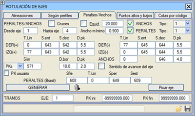Pencerenin bu alanından, Düşey Güzergah'ta tanımladığımız dever kuralına göre dever diyagramını plan üzerine çizmek mümkündür. Pozitif ve negatif deverler için ve her bir taraf için çizgi tipi seçmek mümkündür. Eğer çizgi tipi dolgulu değilse, üzerine tarama çizgileri eklenir. Aynı şekilde, eksenin genişlik kuralını (Düşey Güzergah'ta tanımlanmış) temsil eden çizgiler, genişliğin sayısal değeri ve oluştuğu kilometre ile birlikte çizilebilir. Ayrıca, pozitif veya negatif, tamsayı veya ondalıklı deverleri ve her bir taraf için etiketlemek üzere sembol de tanımlanabilir. Adım kutucuğu etkinleştirilip ilgili değer verilerek, dever ve genişliklerin adım aralığına göre etiketlenmesi sağlanır. Eğer Eksenin ilerleme yönü seçeneği işaretlenirse, o zaman deveri ve genişlikleri etiketleyen semboller her zaman eksenin ilerleme yönüne göre yönlendirilir (aksi takdirde, baş aşağı kalan semboller 180 derece döndürülür). İsteğe bağlı olarak, genişlikler ve deverler etiketlenirken aynı anda KM de etiketlenir. Her durumda, genişlikler ve deverler, kurallarında değişiklik olan yerlerde etiketlenir. 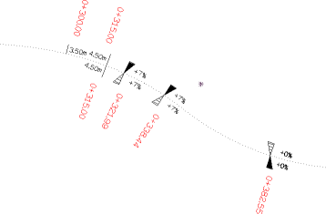Varsayılan olarak, KM'yi etiketlemek için S571 tipi sembol kullanılır; bu sembol 0 veya negatif ise etiketlenmez. D.kenar, KM'lerin yerleştirilmesi için platform kenarına olan mesafedir:
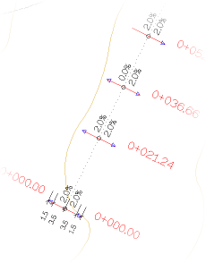Bu genişlik ve dever etiketleme şekli tip 1'e karşılık gelir, ancak program genişlik etiketlemesinin banketleri de içermesine izin verir (tip 2). Deverler durumunda, eğer tip 2 seçilirse, o zaman bunların ölçülendirilmesi banketleri de içerir (ancak bu durumda bunların enine eğimleri etiketlenmez). Soldaki resim bu tür bir etiketlemeyi göstermektedir. Tip 2 etiketleme modu kullanıldığında, otoyollar durumunda bir iç banket de etiketlenir. Hem genişliklerin hem de deverlerin tip 2 etiketleme modu, Brezilya gibi bazı ülkelerde tipiktir. 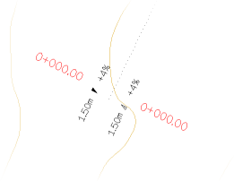Banket tipi, sağda bir örneği görülebilen, banketin (yardımcı platform 2, kod 2 ile 11 arasında) genişlik ve dever etiketlemesini yapmayı sağlar. Banket tipi etiketleme modu kullanıldığında, daha önce belirtildiği gibi tip 2 gibi, otoyollar durumunda bir iç banket de etiketlenir. Banket tipi, A3 (kod 11-12) ve A4 (kod 12-13) banketlerinin genişliklerini de etiketler. Trotuar tipi, trotuarların deverini kod 20, 21 ve 22'ye kadar etiketlemeyi sağlar. Eğer adım aralığı seçeneği işaretli değilse, sadece Trotuarlar menüsündeki veri noktalarında etiketleme yapılır. KM/Kazık arasında geçiş yapma imkanı. Eğer Kullanıcı KM kutucuğu etkinleştirilirse, kilometreler KM Denklemlerinden türetilir. Ana platformların genişlik ve deverleri Bağımsız Genişlikler olarak tanımlandığında deverlerin etiketlenmesi. Bu durumda iç ve dış banketlerin ve tanımlanmış olan her bir platformun (Genişlik 0, Genişlik 1, Genişlik 2 ve Genişlik 3) dever değerleri etiketlenir. Mod 1 ve 2, bu durumda Brezilya modu gibi yapılır. Eğer sabit adım aralığı modu etkin değilse, herhangi bir platformun bağımsız genişlik/deverinin tanımlandığı tüm kilometreler, artı geleneksel dever kuralı için girilen veriler ve bunun sıfır değerinden geçişleri etiketlenir. Minimum genişlik, bu parametre ile etiketlenecek minimum şerit genişliği tanımlanabilir. Brezilya Tipi deverlerde, kullanıcı ayrıca deverin etiketleneceği dört ek kod çifti tanımlayabilir: 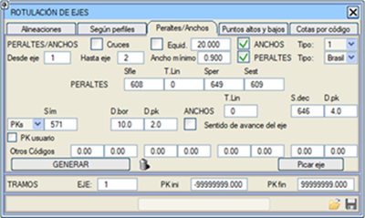 EN YÜKSEK VE EN DÜŞÜK NOKTALARIN ETİKETLENMESİ Diyalog kutusunun bu alanından, en yüksek (PA) ve en düşük (PB) noktaların KM/Kazık ve kot sembollerini plan üzerine etiketlemek mümkündür. Kütüphane varsayılan olarak en yüksek noktayı etiketlemek için S324 ve en düşük nokta için S325 sembolünü kullanır, ancak bu çizimi yapmak için sırasıyla S460 ve S461 sembolleri de mevcuttur. 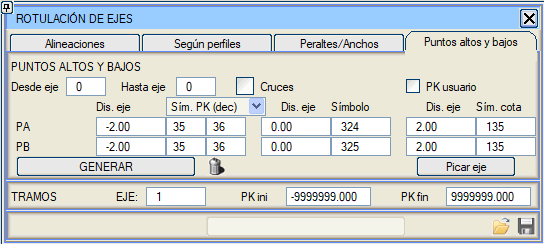 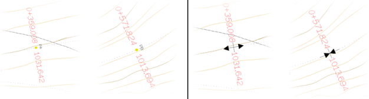
S324 ve S325 (sol) ve S460 ve S461 (sağ) sembolleriyle en yüksek ve en düşük noktaların etiketlenmesi
Eğer Kullanıcı KM kutucuğu etkinleştirilirse, kilometreler KM Denklemlerinden türetilir. KODA GÖRE KOTLAR Belirtilen bir yüzeyin koduna göre, enkesit başına 5 noktaya kadar kotu ve kullanıcı tarafından tanımlanan bir enkesit aralığıyla planda etiketleme seçeneği. Eksenin bir tarafından veya her iki tarafından etiketleme imkanı verilir. 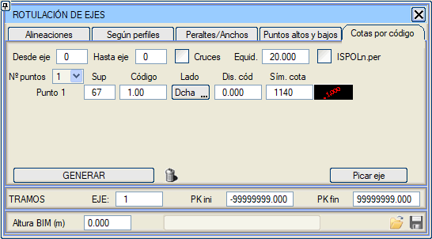 Eğer ISPOLn.per seçeneğini işaretlersek, veriler hesaplanmış enkesitten alınır ve belirli bir değerin katları veya tümü (0,0) seçilebilir. Bu durumlarda, eğer eksen bir sınır çizgisiyle veya bir dönel kavşakla iki kavşak koluna ayrılarak budanmışsa, eksenin hesaplanmayan bölgesindeki değerler artık etiketlenmeyecektir. Eksen Etiketleme Stilleri (.ali) 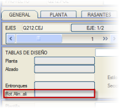 Eksen etiketlemesi için gelişmiş komutlar içeren .ali dosyalarının içeriği ve kullanımı burada açıklanmaktadır. GENEL sekmesinden, her bir eksen için farklı bir plan etiketleme stili (.ali) tanımlanabileceği unutulmamalıdır; böylece program, kendi etiketleme stili beyan edilmiş bir ekseni etiketleyeceği zaman, bu stile geçer, bu eksen ve beyan edilmemiş sonraki eksenler için bunu kullanır.
Plan Çizimi PLAN dikey menüsünden → [PLAN ÇİZİMİ], çeşitli eksen etiketleme olanaklarına ve ayrıca bir tür etüt sonucunu EDM üzerine çizmeyi sağlayan diğer araçlara erişim sağlanır. Bunlar şunlardır:
Düşey Güzergah menüsündeki plan silme ikonu, yalnızca mevcut ekseni siler; ancak [PLAN] tuşundan hemen sonra basılırsa, çizilmiş olan her şey (Tüm aktif eksenler veya mevcut olandan farklı bir eksen) silinir.
Plan Paftaları 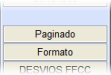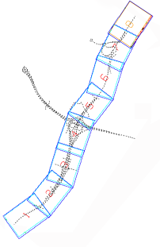[Paftalama] PLAN dikey menüsünden → [PLAN ÇİZİMİ] yolundan, plan çiziminin paftalamasını ve paftalar için bir format (kağıt boyutu ve antet) oluşturmak mümkündür. Bu paftalama dosyası (.pag), proje planının paftalarının çizimi için sayfa dağılımını içerecektir ve oluşturulması için program, eksen numarasını, başlangıç ve bitiş kilometrelerini ve bir pafta uzunluğunu ister. Böylece, bahsedilen .pag dosyasında saklanan bu sayfa dağılımını daha sonra yazdırma sırasında kullanmak üzere otomatik olarak oluşturur. 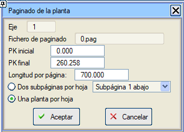 Pafta başına iki alt sayfa: Alt sayfa 1'in yukarı mı yoksa aşağı mı oluşturulacağı belirtilir. Antetin veya başlığın aynı paftada iki plan güzergahını temsil etmek için yeri olup olmadığı düşünülmelidir. Kullanılan format, ölçek ve verilen pafta uzunluğu arasındaki ilişki dikkate alınmalıdır. Klasik bir paftalama, 1:1000 ölçeğinde A1 formatlarını 700 m'lik eksen kesimlerinde kullanır. Boykesit Paftaları ISTRAM®/ISPOL®, çok çeşitli özelleştirilebilir şablonlardan boykesit paftaları çizmeyi sağlar. Bu bölüm burada açıklanmaktadır. Enkesit Paftaları ISTRAM®/ISPOL® ayrıca, çeşitli özelleştirilebilir şablonlardan enkesit paftaları çizmeyi de sağlar. Bu bölüm burada açıklanmaktadır. 3B Çizgi Çiz 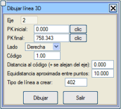Bu araç, platformun herhangi bir noktasının (tip kesitten gelen kod 50 palye kenarı veya kod 600 hendek tabanı gibi kodlar hariç) analitik tanımına göre bir 3B çizgi çizmeyi sağlar. Seçeneğe tıklandığında, program aşağıdaki bilgileri isteyen bir diyalog kutusu gösterir:
Yol Çizgileri Yol çizgilerinin çizimi burada açıklanmaktadır. Bitüm Püskürtme Alanları 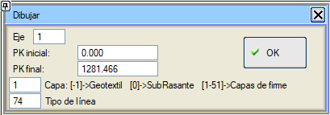Bu seçenek, her bir üstyapı katmanı için, bu katman üzerine püskürtme yapılacak plan alanlarını oluşturmayı sağlar. Kilometre aralığı, katman ve alanlar için bir çizgi tipi (varsayılan olarak, gri bir katı dolgu ile ilişkilendirilmiş L74 çizgi tipi) tanımlanır. Bir Geotekstil [-1] katmanının alanını çizmek mümkündür. Bu, drenaj tabakasının tavanından dolgu şeviyle kesişene kadar olan alana karşılık gelir. Hız Değiştirme Şeritlerinin Ölçülendirilmesi Bu seçenek, burada daha ayrıntılı olarak açıklanan, kavşakların geçiş kaması ve şerit uzunluklarını ölçülendirmeyi sağlar. |